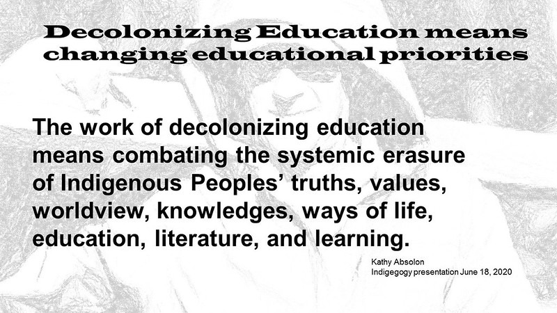

Original Blackboard item · _7400110_1
Now listen to Kamilaroi psychologist Clinton Schulz, one of the co-designers of the SEWB framework, describe SEWB from his Indigenous lens.

[6.88] So, I'm going to give you the really [8.08] short version of who I actually am cuz [10.80] Annie likes to talk. Eh, and uh so my [14.32] name's Clinton Schultz. I'm a [15.84] psychologist who happens to be [17.32] Aboriginal. I'm a Gilloy man. So, my mob [20.08] are from northwest New South Wales. Uh [22.08] my mob are actually from a place that [23.36] these days is called Lake Keep It, sort [25.36] of just outside Gunnada. Uh I've spent [28.16] most my life on the Gold Coast though [29.76] and in North [31.00] Brisbane. So that's the short version. [33.12] I'll leave it there because usually I'll [34.48] talk about myself half the [36.60] day. Okay. So what I've come along to [40.40] talk to is is the talk about is this [42.64] model of social emotional well-being [44.00] that quite a few of us members of AIPA [46.80] have been working on for quite a while [48.56] now. And it's been evolving constantly [50.72] for several years now until it's got to [53.96] this. and to get to here as Pat said uh [58.32] the groundwork was all done starting [60.00] back in 1989 with the national [62.32] aboriginal health strategy and then 1995 [64.96] with uh the ways forward report and then [67.68] the uh social emotional well-being [70.16] framework that was in place 2004 2009 [73.20] which is being worked on presently [76.08] renewed presently. So that's a lot of [78.08] the background information that's led to [79.92] this. [81.84] One thing you the first thing you need [83.28] to realize about uh social emotional [86.16] well-being when it's Aboriginal and [87.68] Toouristra Island people talking about [88.96] and I'm just going to say Aboriginal [90.24] because I'm Aboriginal and so I don't [91.60] want to talk on behalf of toristra [93.20] people. Uh when we're talking about [95.28] Aboriginal social emotional well-being [97.52] it's vastly different than the term [99.92] social emotional well-being that gets [101.76] utilized globally throughout mental [104.00] health. So if you actually Google social [106.72] emotional well-being, your first 50 hits [108.40] or so will come up from international [109.84] papers all to do with mental health. [112.56] Whereas Aboriginal social emotional [114.48] well-being is a much larger and holistic [117.04] concept that uh takes into consideration [119.76] all those elements of people's being uh [123.84] such as culture, land, etc., etc. So I'm [126.64] going to run through all of these uh and [128.88] just give a quick rundown because I've [130.56] only got seven and a half minutes left [132.88] or something. Um, and how they all sort [136.32] to fit together, how they all fit [137.68] together, and how they all have a [138.96] constant interplay on each [142.92] other. So, the best way for you guys to [145.36] wrap your heads around this thing is to [147.04] think of it like a wheel laid out [149.28] exactly like the wheel on your car. So, [151.68] at the center there, you've got your [152.96] your hub or your or your or your nuts [155.44] that hold everything stable. [156.80] Everything's held together by that [158.40] there. So, you could put whatever word [159.84] you want in there. We've put a holistic [161.68] social emotional well-being just to help [164.08] people not confuse it with uh other uses [167.36] of social emotional well-being that are [169.72] around. And then if you think of these [172.56] domains that are sort of sitting out [175.32] here, think of those like the spokes on [178.32] your wheel. So those spokes obviously [182.00] help to keep the hub and everything [183.68] strong and keep that nut and everything [185.36] in place. So those spokes are all part [187.60] of this one great model. So here you can [189.92] see we've got connection to physical [192.56] well-being. So the way this is [193.84] structured is we've we've started with [196.56] the individual. So looking at those [198.00] aspects that are related to individual [200.32] experience, individual well-being and [202.08] then we sort of work out from there and [203.76] start taking into consideration those [205.68] elements of family and community and [207.04] culture etc etc until we get out to [209.04] country. So connection to physical [211.64] well-being. As an Aboriginal man, as a [213.84] Gamiloy man, when I think of physical [215.92] well-being, yes, I'm considering all [218.24] those elements of physical health and [219.92] well-being that we'd usually consider. [221.84] Nutrition, healthy healthy lifestyle, [225.04] you know, not [227.08] being exposed to to chronic disease, [230.48] etc., etc., all those elements. But [232.56] also, when I'm thinking about physical [234.08] well-being from an Aboriginal [235.44] perspective, I'm thinking of it as the [237.84] body is a vessel. So that connection of [241.12] body to spirit is also very [246.04] important. So connection to to mental [248.64] and emotional well-being. I first I'll [251.04] give you an example of physical [252.08] well-being. What I'm talking about [253.12] there. [254.04] So I I surf a lot. I engage in a lot of [257.44] sport. I also ride ride a motorbike. I'm [259.84] going to touch a table with something [261.12] wood here before I keep going. [263.32] Um, I could at some stage have a [265.68] motorbike accident which would lead [268.00] could lead to me losing my leg for [270.00] instance which would mean I would not be [272.16] able to continue with the everyday [274.32] activities that I enjoy doing in my life [276.40] that that help form my identity uh as [279.68] that person. So that's also what uh an a [282.88] part of physical well-being to us which [285.12] starts to reach into that mental and [286.80] emotional so starts to obviously connect [289.04] with that mental and emotional side [290.96] also. [292.48] So beyond all the psychological and and [295.60] emotional factors that we generally [297.44] think of in terms of uh mental and [300.24] emotional well-being once again as a [302.32] gilloy man when I'm talking about [304.64] connection to my emotional or my mental [306.56] state I'm talking about my ability to [308.80] just sit and be at peace with my [311.16] thoughts. So if I'm at if I'm at unease [314.16] at any stage there'll be certain places [316.24] that I can go where I can just sit and I [318.88] can listen to what's going on around me. [320.56] It might be my ancestors talking to me. [322.32] It might be the might be the birds. It [324.16] could just be the trees. I can process [326.24] all that information. Now, if I was to [328.08] lose that ability, that would lead to [331.12] quite a lot of unstability for me [333.36] because it's an important part of who I [335.44] am and of of my identity. So we need to [338.72] start thinking I guess outside of those [341.20] those usual elements of biological or [344.64] physiological health that we generally [346.48] consider because for people all peoples [348.32] of ethnically diverse or culturally [350.48] diverse backgrounds and particularly [351.92] Aboriginal [353.00] people there's other issues there's [355.44] other areas that are of great importance [357.84] to [358.92] us. So connection to family and and [361.68] kinship. [363.88] So when we're talking about when we yarn [366.72] about family, it's it's a much grander [370.00] concept than I guess uh many people are [372.56] used to in an individualistic society. [375.12] So Australia recently was voted as as [377.92] the second most individualistic society [380.24] on the planet just behind the US. They [382.24] only just pipped us. But when you're [384.08] talking about Aboriginal toristra [385.52] islander peoples, you've got some of the [387.60] most collectivist societies that you'll [390.24] come across globally. So polar [392.24] differences there. So when we're talking [393.60] about family, we're not talking just [395.04] about that nuclear unit. We're talking [397.04] about family that's been established [398.64] through processes of removal and people [400.64] having to establish new families. We're [402.32] talking about family through processes [404.32] of kinship and law and the constructions [406.96] that go around those. We're talking [408.72] about families based around concepts of [411.36] respect and endearment. So anybody I [413.68] hold great respect for is just as much [415.84] my family as my direct brother or sister [418.48] are. [419.88] So, we've got a lot more connections [422.40] with a lot more people a lot of the [425.80] time. Connection to community. So, when [428.48] we're considering community, once again, [431.04] it's one of these terms that can have [433.04] many different meanings when you're [434.40] talking to Aboriginal people. So, I [436.32] could be talking about my geo my [438.12] geographic community. So, I'm a member [440.64] of the Aboriginal Toristra Islander [442.48] community on the Gold Coast because [444.08] that's where I live. I could be talking [445.84] about my heritage community. So, I'm a [448.00] Gamiloy man. So I could be talking about [449.68] that community. I could be using it in a [451.84] generalized term to talk when I'm [453.84] talking about engaging with Aboriginal [455.68] and Toristra Island people. So I might [457.20] just be saying, "Yeah, I've got to go [458.24] have a yarn to community." What I'm [460.08] actually saying is I've just got to go [461.36] have a yarn with Aberiginal touristra [462.72] island people. So there's many different [464.56] ways that that word community will also [466.56] be utilized or people will understand. [469.12] And each is just as valid and each is [471.12] just as important. It's not up to us to [473.44] establish um what these definitions [476.08] should be. It's up to each individual to [477.68] to construct these ideals for [480.12] themselves. So culture generally when [482.48] we're talking about culture people [484.00] consider things like language. Language [486.80] is obviously the most important part of [488.96] most people's [490.28] culture but also law for us. So LE [493.76] everybody would have heard Law [495.92] Aboriginal concept of law which is [497.68] vastly different to Law. Our law is [501.20] based on ancient principles of respect [504.88] and and understanding and it's been [507.80] unchanged since the beginning of time. [510.24] So everybody's aware of what it is. [512.24] Whereas L seems to change every couple [515.04] of days and nobody can even ever keep up [517.04] with new [518.36] legislations. So it can be very [520.16] confusing for people. But it also [522.48] includes our song, our dance, our arts [524.48] and all that sort of stuff. all those [526.08] elements that make us um Aboriginal [528.92] peoples and connection to land or [531.28] connection to country. Uh you'll also [533.68] hear people use the words connection to [535.84] nature or connection to environment in [538.24] there. Particularly people who have been [540.08] who unfortunately have been removed and [542.08] haven't had the the opportunity or the [544.64] chance to get back to country to meet [546.88] their mob or to engage with their [548.32] peoples. So that you'll find a lot of [550.40] people will still have this inherent [552.00] very strong connection to to nature or [554.80] to the environment. So people might just [556.40] like being at the beach. They don't [557.84] really know why. They've just always [559.52] felt safe at the beach. For some people [561.68] that I engage with, it's their garden. [563.60] They just feel comfortable and safe in [566.24] their garden. That's the exact same [568.24] connection to country as I experience as [569.92] a Gilloy man when I've got my feet [571.60] rubbing in the dirt uh around Lake Keep [574.88] It. It's the exact same thing. We can't [577.76] um minimalize the experiences that [579.84] people have around country, connection [582.00] to country, because unfortunately not [583.68] everybody uh has had the opportunity to [586.72] to to feel that experience of connection [588.80] to country and they've had to forge new [590.64] ways of instilling some of that [592.72] connection for [596.12] themselves. And then connection to [599.52] spirit spirituality and ancestors and [601.52] and this is a section that sometime [603.84] raises some concerns for people because [605.76] they go a spirituality. So when people [608.56] try and label what spirituality should [610.64] be sometimes for me and for many other [612.80] peoples who work in this area [614.88] spirituality is just a set of beliefs [616.80] and a set of principles that people are [618.64] guided by and believe in. Doesn't matter [620.72] if it's, you know, our beliefs in the [622.88] dreaming or people's beliefs in the [624.80] Bible and Christianity or even people's [627.60] steadfast belief in science. Um, it's a [631.44] set of beliefs. It's a set of [632.64] principles. It's a set of them of ways [635.68] they understand themselves in the [638.08] environments that they're in. And [639.36] they're all just as valid as each other. [640.96] So, for instance, if I went somewhere [642.40] like Yaraba and I pulled people up [645.00] there, what's spirituality to you? I'd [648.08] be likely to get everything back from a [651.04] strong connection to country or a strong [653.12] connection to my dreaming to a strong [655.60] connection with with Christ and with [658.16] with my religion. And each one is [661.48] exactly or is just as strongly valid as [664.64] as each other. And it's not up to us to [666.56] determine what spirituality is for [669.00] individuals. So I guess one of the the [671.28] real strengths of this model is that it [673.04] is inclusive. Um, we're not trying to to [676.56] look for, I [677.80] guess, we're not trying to to put [680.24] variance aside. We're trying to to be [682.40] welcoming of that variance and and [684.08] establish that everybody's got some [686.16] levels of this variance within them. Uh, [688.56] and it's really then about the [690.16] experiences and expressions that people [692.48] have to these connections that drive [694.88] some of these mental health concerns. [697.20] So, I'll give you a very quick example [698.64] of that. We might have auntie who has [700.88] very strong connection to country. She [702.72] knows where her mob is. She's always [704.64] known where her her people have come [706.40] from. Um, but yet there might be a [708.64] native title dispute going on in that [710.88] area. And for whatever reason, her [713.04] family might not be recognized on that [714.88] native title dispute. So then she might [716.96] be clashing with all the other families [718.64] within that community on that country [720.64] who are saying, "No, your mob's not from [722.16] here. Your your family signed a [724.16] relinquish relinquishment of [725.92] Aboriginality form two generations ago. [727.92] So they sold out." [729.96] So for whatever reason, people may have [733.92] negative experiences of these strong [736.64] connections. Does that make sense to [738.32] everyone? So as I said, Annie might have [741.44] a really strong connection. She knows [742.88] where it is, but that experience of that [745.04] connection is actually quite negative [747.36] because it's having impact on her [748.88] connection to community and to family. [750.64] She's arguing with other people which is [752.16] obviously then that higher levels of [753.76] stress is going to impact on her [755.92] physical health and her mental [758.12] well-being. So you can't deconstruct [760.64] these issues. Uh people are people. [762.56] People are a whole. I don't think we can [764.80] continue segregating parts of people [767.76] when people are a whole. So those [771.52] experiences then as I said can be [774.40] negative or positive and it's then very [776.00] much about how people express those and [778.48] that's what we end up with presentations [780.40] of in terms of when they get to our [782.56] door. So in Annie's case she might be [785.20] very vocal about it and argue and you [787.52] know it might really upset and enrage [789.68] her. So obviously that's going to have a [791.84] negative impact on her physical and [793.76] mental well-being. But Arie might also [796.56] choose to take that as, you know, a bit [799.20] of fire and and and to use that energy [802.72] to make sure that, you know, policy [804.56] changes occur or that education occurs [806.64] in communities to explain, you know, [809.12] maybe that her family didn't sell out, [810.72] that they did it to protect children and [812.32] it was a way of of it was a form of [814.72] protection rather than a selling out. [816.24] And so she might use that power in that [817.84] way. So therefore, her exper her [819.52] expression of that experience could be [821.60] positive. So you're going to have this [824.08] variances across everybody and obviously [826.40] across Australia. We're no homogeneous [828.32] Aboriginal people. We're a makeup of [830.72] many many many many individual nations. [834.00] So this is also going to vary across [835.76] every single one of those nations you go [837.60] to. I'd argue it'll also vary in every [839.92] single community within those nations [842.64] and amongst every individual within [844.48] those communities. But that's okay. [846.08] That's the that's the the greatness of [847.84] this is that it allows for that. Do you [850.00] want to mention that we trial it at that [852.24] big conference? 250 Aboriginal people in [854.96] national. Yeah. So we put this to 250 [859.12] social emotional well-being workers. [860.40] Aberiginal and touristra islander social [861.76] emotional well-being workers uh earlier [864.08] this year. Earlier this year or late [865.44] last year. I don't even know what year [866.64] or month we're in at the moment. Um [870.88] and there was an overwhelming positive [873.04] response to it. Everybody just got it. [875.52] But I also use it with a lot of my [877.92] non-indigenous [879.40] clients and it works for them as well. [881.68] And I also do a lot of education with [883.68] non-indigenous practitioners and they [886.00] go, "Wow, I can use this with any of my [889.28] clients." And I think that's a wonderful [890.80] step to start utilizing [893.84] Aboriginal knowledges and transferring [895.68] that into a mainstream context instead [897.92] of always expecting Aboriginal people to [900.40] work in mainstream or come in with the [902.72] deficit that we can bring richness to [904.96] the dialogue. Yeah. Um [909.84] so then social determinance, cultural [911.52] determinance, political determinants, [913.68] these all act I guess either as [916.24] protective or risk factors to something [918.80] occurring to these connections. So for [920.88] instance, if we took the the social [922.88] determinant of unemployment for [924.84] instance, if I've got it, if or of [927.44] employment. So if I'm employed and I'm [929.44] and I'm doing quite well, I can afford [931.20] my rent, everything's going okay for me, [933.44] it'll probably act like a tire [935.28] protecting that protecting that that [937.84] hub, protecting that mechanism. But if [940.24] I'm unemployed, well then that social [942.56] determinant is then going to act like a [945.00] nail. And it doesn't matter where that [947.28] nail sticks. What happens when you get a [949.84] nail in a tire? [952.56] Where does the whole thing go flat or [954.32] just where you got the the whole thing? [957.20] So it doesn't matter where we get damage [958.80] in this network. People become deflated. [961.92] People become overwhelmed. People start [964.76] presenting with what then gets diagnosed [967.36] as clinical mental illnesses or physical [969.60] illnesses etc etc. when really a lot of [972.24] the time, not all the time, but a lot of [973.68] the time, they're just [975.48] themselves symptoms of much larger [978.48] social emotional well-being [981.24] concerns. So, that's kind of where we're [983.28] at with it at the moment, and it seems [984.88] to be fitting with most the people that [987.12] we're that we're presenting it with and [988.80] that we're working through this with at [990.56] the moment. So, that's what I want to [992.40] leave you guys with this afternoon. Um, [995.04] this will be all the information about [996.64] this will come out in the new working [998.16] together textbook re the revised edition [1001.36] which I don't know when we're going to [1002.48] have that out. I wish I could [1005.52] when we finish writing it. Um, no by by [1008.88] second semester start for uni cuz I've [1011.36] got like a thousand students waiting for [1012.96] it. So I've got to get it [1015.44] done by then. Cool. So that's what all [1018.40] I'm going to leave is with you. [1024.48] much time. Thanks. We probably have time [1026.48] for one or two very quick questions. [1029.92] Sorry. So much for our discussion [1031.92] everyone, but never mind. Grab us this [1034.00] evening. They'll be around. [1037.92] Did you really equate a steadfast belief [1040.56] in science as spirituality? Yeah. And [1043.28] I'll tell you why. because I had [1044.72] somebody that I was doing training with [1046.16] and he just absolutely did not want to [1048.88] accept that spirituality was a part of [1053.36] uh was important to people's partic it [1055.60] was mental health training that I was [1056.88] doing. He believed in science and the [1058.80] rules and the regulations around science [1061.28] and I simply turned to him and said well [1063.44] that's your belief system and it's [1065.84] absolutely no less valid than any other [1069.04] belief system. I'm not talking [1070.88] scientology. I'm talking steadfast [1073.12] belief in sets of rules and regulations [1076.00] that govern different fields of science. [1078.80] Uh and for some people they have a very [1081.84] strong belief in those principles. [1087.20] Uh that's your beliefs then. Okay. [1091.92] There's plenty of science that actually [1093.20] shows. [1094.96] So that's actually a narrow view of [1096.64] science. There's plenty of scientific [1098.64] research that shows that people who have [1100.32] those beliefs do actually have better [1102.24] health outcomes whether the beliefs are [1103.92] true or not. As I said, I wasn't I [1105.76] wasn't belittling any of them. I was [1107.44] simply informing him that that's his set [1109.20] of beliefs and that's no less valid or [1111.92] more valid than somebody's belief in [1113.60] their spirituality system. I think what [1116.32] shocks everyone is when it's because [1118.16] people think that's how things are and [1120.72] undisputed facts. So if you say maybe [1122.96] it's a set of beliefs, it's like oh, you [1124.96] know, no, they're not. That's real. Um, [1127.28] so I think that's the issue.
false Finish ? Retry ? SEWB emerged following the WHO’s Ottawa Charter for Health Promotion in 1986. Question 1 SEWB recognises Aboriginal cultural weaknesses. Question 2 true SEWB is based on a collectivist concept of family, as opposed to the western individualistic concept of family. Question 3 The groundwork for SEWB began in 1989 with the National Aboriginal Health Strategy. Question 4 Language and Lore are key aspects of culture in the SEWB framework. Question 5 The term SEWB did not exist before the emergence of this framework in Australia. Question 6 SEWB encompasses mental, physical, cultural and spiritual health. Question 7 Concepts of SEWB are diverse and vary across the 250 Indigenous Nations that comprise Indigenous Australia. Question 8